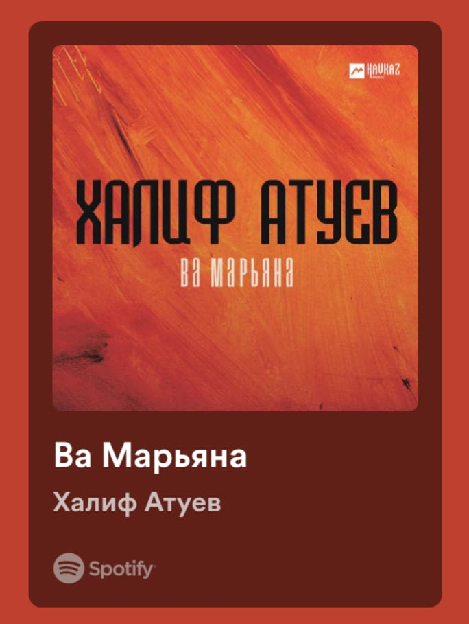

10"A" - Ең бастысы
10"A" - Ең бастысы
⚡ Ақшақар Айдарчиктің оқиғалары-2, Бүгінгі ҮТ, Музыка-дня

 Бүгінгі үй тапсырмасы
Бүгінгі үй тапсырмасы
| {29}.01.2024 | |
|---|---|
| 1. Орыс тілі | Задание 151 до 7 баллов задание 153 до 10 баллов |
| 2. География | Дүниежүзілік шаруашылықтың аумақтық модельдері |
| 3. Алгебра | №34.8 (№34.9) |
| 4. Ағылшын | Ex3,4 71бет |
| 5. Қ.әдебиет | 96-бет 3,4,5-тапсырманы орындау |
| 6. Информатика | |
 Іс-шаралар
Іс-шаралар
| 30.01.2024 - Орыс тілінен ашық-сабақ |
 Музыка-дня: Алибек
Музыка-дня: Алибек

 Фанфик часть-2
Фанфик часть-2
Орманда өмір тоқтаған жоқ, ал жаз күзде өзгерген кезде, бұл сиқырлы оқиғада жаңа кейіпкер пайда болды. Көңілді және көпшіл бала нұрик достарымен уақыт өткізгенді ұнататын. Ол алибекушкамен жиі кездесіп, шытырман оқиғалар мен күлкі туралы әңгімелесті.
Бірде Алибекушка өзінің күлкілі әңгімелерін айтып жатқанда, Нұрик оларға жақындап, компанияға қосылды. Ол маймылмен тез тіл тапты және олар көп ұзамай ажырамас достарға айналды. Олар бірге орманды зерттеп, жаңа бұрыштар ашып, әртүрлі орман тұрғындарымен кездесті.
Кешке, күн батқан кезде аспанды ашық түстермен бояған кезде, достар Алибекушка өсірген оттың жанына жиналды. Нұрик күлкілі әңгімелер айтып, бүкіл компанияны жылап күлді. Айдарчик, жұмбақ бала және маймыл осы кештерге қосылып, қуаныш пен жылулық атмосферасын құрды.
Алибекушка достық пен көңілді тойлау үшін Нұриктің құрметіне кеш өткізуді ұсынды. Орман музыка мен күлкіге толы болды, ал достар жұлдызды жарықта биледі.